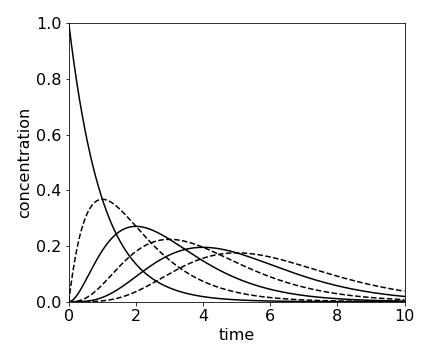
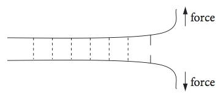
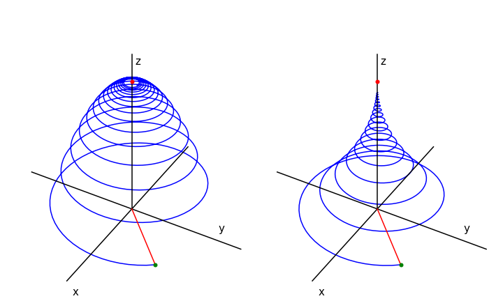
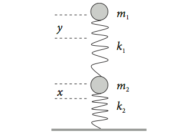
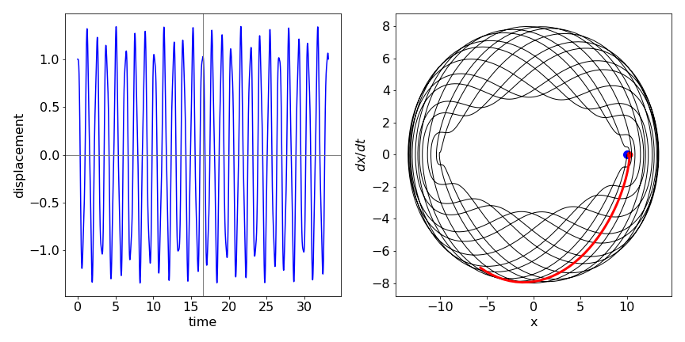

Simultaneous equations¶
7.1 Sequential chemical reactions¶
Complex chemical reactions can often be represented as a set of simultaneous reactions. The sequential scheme \(\displaystyle A \stackrel{k_1} \longrightarrow B \stackrel{k_2}\longrightarrow C\) has already been solved with the integrating factor method in Section 2, and as an eigenvalue - eigenvector equation in Chapter 7.12.3. Here it is converted into a second-order equation and solved using the \(D\) operator method. The rate equations are,
Differentiating the second equation and substituting \(dA/dt\) produces
Isolating \(A\), substituting and rearranging gives
The solution can be written down after solving the characteristic equation \(\displaystyle m^2 + (k_1 + k_2)m + k_1k_2 = 0\), which has roots \(m = -k_1, -k_2\). The homogeneous equation is
and the constants \(c_1\) and \(c_2\) are, as usual, determined by the initial conditions. If for instance, \(A_0\) is the initial concentration of A, and B and C are initially zero, then since C does not decay, \(C = A_0 - A - B\). Because \(B\) is initially zero, then
and the final step is to find \(c_1\) when \(\displaystyle A = A_0e^{-k_1t}\). This is done by differentiating B and equating this with the rate equation \(dB/dt = k_1A - k_2B\) after substituting for A and B. The resulting equation produces \(c_1 = k_1A_0/(k_2 - k_1)\) making
which is the same result as that from the integrating factor method.
7.2 Sequential reactions with equal rate constants¶
There are important chemical examples of the case when the rate constants are all equal at \(k\) in the scheme \(A \to B \to C\), notably the mechanical unfolding of proteins and DNA using an atomic force microscope. The fact that all the rate constants are equal does not mean that the concentration of B is zero at all times, even though it is formed at the same rate as it decays. Taking the last result, it is not possible to make \(k_1 = k_2\) because the concentration of B becomes undefined as 0/0, however, l’Hopital’s rule could, in this case, be used to find the limit \(k_2 - k_1 \to 0\), (see Chapter 3.8). Instead, we start with the combined rate equations as in section 7.1,
The roots of the auxiliary equation are \(m = -k, -k\), and, as they are the same, the method of Section 4.3(iii) has to be used. The first part of the solution is \(\displaystyle B = c_1e^{- kt} + B_1\) where \(B_1\) is a new function of \(t\), which has yet to be found. This solution is normally guessed (from experience), and then tried to see if it fits the equation. As a test, let \(\displaystyle B_1 = c_2te^{- kt}\) making the solution
If B is differentiated and put back into (37), the result is zero showing that this is indeed a solution. To evaluate the constants, this result should be differentiated and \(A\) and \(B\) substituted into the rate equation describing \(B\), as was done in the previous calculation. The initial conditions are normally \(A=A_0\) and \(B = 0\) at \(t = 0\). As \(B = 0\), then \(c_1 = 0\) and, after substituting into the rate equation \(c_2 = kA_0\), this makes
Plotting the A and B concentrations shows that as A falls exponentially, B rises and falls as intuition dictates.
If there are a series of reactions, \(A \to B \to C \to D \to \) etc. and only A is present initially and \(k\) is the same rate constant for each step, then the concentration of the \(n\)th species \(C_n\) is found to be
which is a Poisson distribution.

fig 15a. Concentration of species \(A \to B \to C \to D \to \) etc. calculated using \(\displaystyle C_n =A_0\frac{k^nt^n}{n!} e^{-kt}\) calculated with \(k = 1\) and \(n=0\cdots 5\). At \(t = 0,\, A_0 = 1\) and all other species are zero.
Although rate constants for the reaction of different molecules can be the same, they are generally different. One situation where this is not true is the unfolding of concatenated proteins by mechanical force.
A concatamer is a macroscopic molecule made by attaching several identical folded proteins in tandem, just like beads on a necklace. The links between proteins consist of only a few peptides compared the the protein which may contain a 100 amino acids. When one end of the concatamer is anchored to a substrate and the other to the tip of an atomic force microscope (AFM), the concatamer can be stretched by the AFM and each protein will unfold but in a random order with respect to its position in the concatamer (Reif et al. 1977; Brockwell et al. 2003). See Fig. 3.21 for a sketch of the experiment. The unfolding is registered by measuring the force and, to a good approximation, the unfolding rate constants for each protein are all the same. However, in this experiment, unlike normal chemical kinetics, the probability or chance \(S\) that a protein is still folded at any given force is measured. If there are four proteins the reaction sequence is \(\displaystyle S_4 \to S_3 \to S_2 \to S_1\) where \(S_4\) is the chance that all proteins are folded, \(S_3\) that three remain folded etc. at a given force.
The rate constants \(k_0\) of thermally induced chemical reactions are constant at fixed temperature and are the same for each protein because they are identical. In the mechanical pulling experiment, the rate constant depends on the force \(f\), because the barrier to unfolding is lowered by the applied force (Bell 1978; Evans & Richie 1997). The rate constant also depends on how fast the force is applied, and the protein becomes stiffer, i.e. more force is needed to unfold it the faster the force is applied. This occurs because the barrier can be lowered more quickly than the average time between thermally induced protein fluctuations that lead to barrier crossing.
The unfolding rate constant is given by \(\displaystyle (k_0/L)e^{f/f0}\) where \(f_0 =kT/x_u\) and \(L\) is the load rate in pN s\(^{-1}\). The constant \(k_0\) is the (thermal) unfolding rate constant at zero force and \(x_u\) is the distance from the minimum of the potential well to the top of the barrier separating the folded and unfolded protein. It is a measure of the distance the protein conformation has to change to reach the unfolding transition state and is typically \(0.25\) nm. The unfolding forces are \(100 \to 300\) piconewton and \(f_0 \approx 15\) pN. Since all proteins are identical, and we assume that each protein experiences the same force irrespective of how many are folded or unfolded, the unfolding scheme for \(N\) proteins can be written as
where the expressions are derivatives with force not time. This set of equations also applies if a set of parallel bonds is unzipped (or unpeeled); they could be the hydrogen bonds holding a protein \(\beta\)-sheet or double stranded DNA together when an opposite force is applied to the top of each strand Fig. 15b.
The set of rather formidable looking simultaneous equations is not linear in \(f\); however, the substitution
greatly simplifies them. The derivative is
and substituting using \(\displaystyle \frac{dS}{ df}\frac{ df}{ du}\) produces,
This set of equations can be solved by an extension of the method of equation (37) and then \(u\) substituted for \(f\). If the initial probability of unfolding is \(S_0\) and all other \(S\) are zero when \(f\) = 0, then
and by continuing the calculation it is found that
and \(S_{unfold}\) is the integral of this result from \(0 \to u\). This equation has the same form as used in figure 15a, but where force replaces time and chance (probability) of unfolding replaces concentration.

Fig. 15b Highly schematic sketch of several parallel hydrogen bonds holding two strands of protein or two lengths of DNA together and being unzipped by an applied force.
7.3 Bloch equations and NMR¶
In an NMR experiment, the sample is placed in a large permanent magnetic field aligned along the \(z\)-axis. The magnetic field splits the energy of the relevant nuclear spin states and if circularly polarized RF radiation of the correct frequency is applied this will cause transitions between the nuclear spin energy levels. The time and spatial evolution of the magnetization (the vectorial sum of the spin magnetic moments/unit volume) is described by the Bloch equations, which are basic to NMR (Flygare 1978; Günther 1992; Levitt 2001). The magnetization \(M\) has components in the \(x, y\), and \(z\) directions and decays with a lifetime of \(T_1\), due to longitudinal or population relaxation and by \(T_2\) transverse, or spin-spin, relaxation due to loss of spin coherence. See figure 13 for a sketch of the geometry of an experiment.
The equilibrium magnetization is \(M_0\) and the magnetic field can have components in the \(x,y\), and \(z\) directions, \(B_{x,y,z}\). The Bloch equations describing the experiment are,
Consider now the case where the external field only has a \(z\) component then the equilibrium magnetization vector \(M_0\) points along the z-axis. In a normal NMR experiment, the magnetization is moved from the equilibrium position by the magnetic component of an RF pulse applied in the x - y plane. After the RF pulse has finished (defined as \(t = 0\)) the spins precess only in the external \(B_z\) field starting with the magnetization where it ended up after the RF pulse ended. This will have components along the three axes of \(M_x(0),\; M_y(0)\), and \(M_z(0)\). Because only \(B_z\) is not zero, the Bloch equations are now simplified to
The \(z\) component can be integrated directly with initial condition \(M_z = M_z(0)\) at \(t = 0\) to give
This equation shows that the \(z\) component decays only with a \(T_1\) lifetime, which is the decay of the spin population back to equilibrium. The \(M_x\) and \(M_y\) equations can be integrated as a pair as in section (i), but in this case it is simpler if they are combined as \( M_{+} = M_x + iM_y \) where \(i=\sqrt{-1}\) and afterwards separated into real and imaginary parts. They become
which is a first-order equation and integrates to
and where Euler’s relationship was used to convert the exponentials to sine and cosines. If this equation is expanded and split into real and imaginary parts, \(M_x\) and \(M_y\) are obtained as
where the substitution \(\omega = \gamma B_z\) is also made. This is the NMR transition and Larmor frequency, which is the frequency of precession about the z-axis.
The motion of the magnetization is the vector of the three components. This spirals around the z-axis at the Larmor frequency \(\omega\) until it reaches the equilibrium magnetization pointing along the z-axis, see Fig. 16. The NMR signal is the magnetization’s component as it crosses the x- or y-axis, whichever contains the detecting coil, and this produces the free induction decay or FID, which decays away with lifetime \(T_2\).
To analyse the complete NMR experiment, the effect of the weak field from the coil in the \(x - y\) plane has to be included. In this case, \(B_x\) and \(B_y\) vary as a cosine and sine respectively, and the Bloch equations are far harder to solve. It usual to make the transformation into the rotating frame which means that the axes are changed so that they rotate at the frequency of the R.F. radiation. Flygare (1978), Allen & Eberly (1987), and Günther (1992) discuss this in detail.
The magnetization in a real NMR experiment, while having the form shown in the figure (Fig 16), has many more rotations than could possibly be shown. The typical resonance frequency for a proton is \(400\) MHz and \(T_1\) lifetime \(10\) s. To make the diagrams a frequency of \(0.1\) was used and \(T_1 = 200\) and \(T_2 = 400\) was used in the left figure. The initial position of the vector \(M{(x,y}(0)\) must be defined also. \(M_0\) was calculated as the length of the initial vector. In the figure the initial magnetization vector was at \((-1, -1 , 0)\). The shape of the FID can be seen by plotting \(M_x\) or \(M_y\).

Fig. 16 Magnetization vs. time when \(T_1 = T_2/2 = 200\) (left) and when \(T_1 = 2T_2 = 400\). The magnetization starts at at \(x,\,y,\,z = 1, 1, 0\) which is at the end of the red line, (green dot). This line represents the initial magnetisation. The magnetisation vector ends on the z-axis at point \(M_0 = 1\), red dot.
7.4 Second-order equations. Coupled springs¶
Pairs of second-order equations can be solved using the operator method. In this example, the motion of a pair of masses and springs is calculated. This calculation is an alternative to the matrix method of Chapter 7.12.
Consider two identical springs each supporting a mass as shown in Fig. 17. This could be a simple model for part of a vehicle’s suspension. The displacement from equilibrium of the upper mass \(m_1\) is \(y\), and that of the lower one \(x\). The force constants are \(k_1\) and \(k_2\). If the springs were isolated, they would exert a force equal to \(-k_2x\) or \(-k_1y\) on their respective masses. When connected together, the upper spring now exerts a force equal to \(-k_1(y - x)\) on \(m_1\) as the displacement is changed by the lower spring. The total force on the lower spring is also changed and is \(-k_2x + k_1(y - x)\). Together, these produce the force equations,

Fig. 17 Two coupled springs.
To make the algebra simpler, suppose that the masses are each \(m\) and the spring force constants, \(k\). Differentiating twice gives
which reduces to
This can be changed into the \(D\) operator form
where \(\displaystyle \omega^2 = k/m\), and has the characteristic equation \(\displaystyle z^4 + 3\omega^2z^2 + \omega^4 = 0\). This has four solutions \(\displaystyle z_{\pm,\pm}= \pm \frac{i\omega}{\sqrt{2}}\sqrt{3\pm \sqrt{5}} \). These solutions are equivalent to \(\displaystyle z_{\pm,\pm}=\pm i\omega\frac{1\pm \sqrt{5}}{2}\) and produces the homogeneous equation
The constants are determined by the initial conditions, which are the initial position, initial velocity, acceleration, and its derivative. The result is that the motion of the spring is the sum of two simple harmonic motions of different frequencies, one greater and one smaller than \(\omega\), which is the frequency of each isolated single spring. Using the second set of solutions, the frequencies are in the golden ratio and its reciprocal, with respect to \(\omega\),
The motion is shown in the next figure (17a) with initial condition \(x_0 = 1\). The motion is clearly complex but appears to repeat itself after about \(16\) secs but more exactly at about \(26\) secs. The figure on the right shows the phase plane with dots at \(0\) and \(16.6\) s (red dot). The red line shows how the trajectory is similar after approx \(16\) secs but not exactly the same as before. Poincare has postulated that any system will periodically return arbitrarily close to its starting conditions; this is seen to be the case in this simple system. The greater the number of oscillators the longer the time for recurrence to occur.

Fig 17a Left. Motion of displacement \(x\) of two coupled weights (see fig. 17) vs. time. Right. Phase plot for the motion showing that the trajectory almost but not exactly arrives back at the initial displacement after \(\approx 16.6\) s. The red line shows that the subsequent motion differs slightly from that which occurred initially.